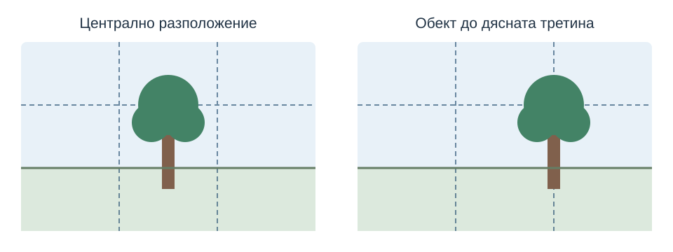

След урока ще можете да:
- определяте основния обект на фотографията;
- сравнявате композиции с различно разположение, гледна точка и свободно пространство;
- избирате кадър според предназначението му в уеб сайт.
1. Какво показва снимката?
Фотографската композиция е подредбата на видимите елементи в кадъра. Преди да снимате, отговорете: „Кое е най-важното тук?“. Това може да е човек, предмет, сграда или действие.
Основният обект е причината да направите снимката. Той трябва да се различава от останалото. Можете да го откроите чрез разположение, размер в кадъра, светлина, цвят или по-спокоен фон.
Пример: за страница на фотографски клуб снимка на ученик, който снима, показва дейност. Ако в кадъра преобладава празна стена, а човекът едва се забелязва, посланието може да остане неясно.
2. Баланс и свободно пространство
Балансът е усещане за съгласуваност между частите на изображението. Голям, ярък или силно контрастен елемент често привлича вниманието. Проверявайте дали второстепенен предмет не отвлича погледа от основния.
Не е задължително двете половини да са еднакви. Симетрична фасада може да изглежда убедително в центъра. Обект встрани може да остави пространство за средата или за посоката на движение.
Свободното пространство не е загубено място. То може да успокоява кадъра и да е полезно за заглавие в банер. Ако човек гледа или се движи в определена посока, сравнете вариант с повече място пред него.
3. Правило на третините
Представете си две вертикални и две хоризонтални линии, които разделят кадъра на девет равни части. Можете да включите такава мрежа в настройките на камерата, ако тя я предлага.
Опитайте основният обект да е близо до пресечна точка, а хоризонтът — до една от хоризонталните линии. Това е ориентир за сравнение, а не задължение. Централната композиция също може да е подходяща, например при симетрия.

4. Гледна точка и граници на кадъра
Променете позицията си, преди да разчитате на обработка. Снимането от нивото на обекта, отгоре или от по-ниска точка може да даде различно усещане. Една крачка встрани често променя и фона.
- Проверете дали основният обект е достатъчно голям и ясно видим.
- Прегледайте четирите края: има ли случайно отрязани части?
- Сравнете хоризонтален и вертикален кадър според бъдещото използване.
- Използвайте мрежата, за да проверите хоризонта, когато той трябва да е изправен.
- Не увеличавайте цифрово без нужда: сравнете с приближаване или промяна на позицията.
5. Практическа задача: шест варианта
Изберете достъпен предмет, растение или място, свързано с проекта ви. Използвайте телефон или фотоапарат. Ако включвате хора, съобразете заснемането и бъдещото публикуване с тяхното съгласие.
- Напишете с едно изречение какво трябва да показва снимката.
- Направете два кадъра: централен и с обект до третина.
- Направете още два от различна гледна точка.
- Направете хоризонтален и вертикален вариант, като запазите ясния основен обект.
- Разгледайте шестте снимки една до друга. Посочете две с най-ясно послание.
- За всяка избрана снимка обяснете разположението, баланса, фона и свободното пространство.
Резултат: шест кадъра и кратко обяснение на избраните два. Запазете ги за следващите упражнения по светлина, подбор и обработка.
6. Проверка и самопроверка
Покажете двата избрани кадъра на съученик, без първо да обяснявате темата. Нека посочи какво забелязва най-напред. Сравнете отговора с вашето намерение.
Задължително ли е обектът да стои на пресечна точка?
Не. Третините са ориентир. Изборът зависи от посланието, формата на обекта и останалите елементи.
Как се различават баланс и симетрия?
Симетрията е сходство от двете страни, а баланс може да има и при различни по големина и разположение елементи.
Защо проверяваме краищата на кадъра?
За да открием случайно отрязани части и разсейващи предмети, преди да снимаме отново.
Как изборът за сайт влияе на композицията?
Банерът може да изисква широк кадър и място за заглавие, а снимката в съдържание — по-подробно представяне на обекта.
Прочетете още
Nikon — насоки за композиция (на английски). За връзката с дизайна прегледайте урок 8 — графичен модел.